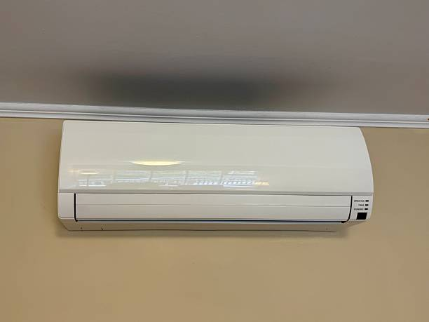
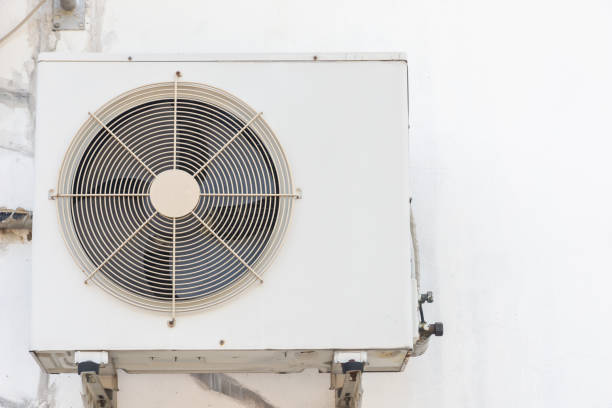
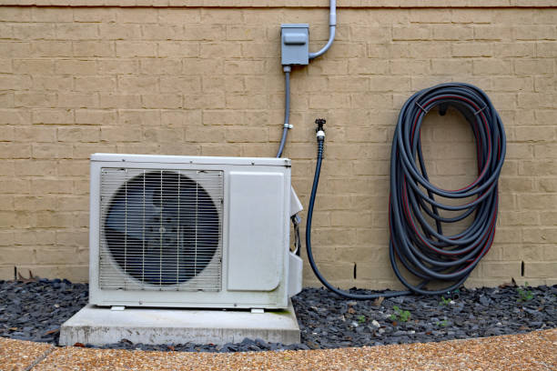
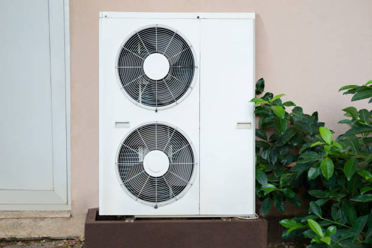

Premier Ductless Mini Split Services in Brandywine, Maryland
Welcome to Brandywine's most trusted ductless mini split specialists! For over a decade, we've been providing exceptional HVAC services to homeowners and businesses throughout Brandywine, MD, and the surrounding Charles County area. Our expert technicians are committed to delivering superior ductless mini split installation, repair, and maintenance services that ensure your comfort year-round.
Ductless mini split systems have revolutionized home and commercial climate control, offering unparalleled energy efficiency, whisper-quiet operation, and precise temperature control for individual rooms or zones. Unlike traditional HVAC systems that rely on extensive ductwork, ductless mini splits provide targeted heating and cooling solutions that can significantly reduce your energy costs while improving indoor air quality.
Why Choose Ductless Mini Splits in Brandywine, MD?
Brandywine's unique climate, with its hot, humid summers and mild winters, makes ductless mini split systems an ideal choice for local residents. These innovative systems offer several compelling advantages over traditional HVAC solutions:
- Energy Efficiency: Ductless systems can reduce energy consumption by up to 30% compared to traditional central air systems, thanks to their variable-speed compressors and zone-based control.
- Quick Installation: Most installations can be completed in a single day with minimal disruption to your daily routine.
- Improved Air Quality: Advanced filtration systems remove allergens, dust, and pollutants from your indoor air.
- Flexible Zoning: Control temperatures independently in different rooms or areas of your home.
- Year-Round Comfort: Modern heat pump technology provides both heating and cooling capabilities.
- Quiet Operation: Indoor units operate at whisper-quiet levels, ensuring peaceful living environments.
Comprehensive Ductless Mini Split Services
Our comprehensive service portfolio covers every aspect of ductless mini split ownership, from initial consultation and system design to ongoing maintenance and emergency repairs. We work exclusively with top-tier manufacturers like Mitsubishi Electric, Daikin, Fujitsu, and LG to ensure you receive the highest quality equipment backed by industry-leading warranties.
Professional Installation Services: Our certified technicians follow strict installation protocols to ensure optimal system performance and longevity. We begin every installation with a thorough assessment of your property's unique requirements, taking into account factors such as room size, insulation levels, window placement, and your specific comfort preferences. This detailed analysis allows us to recommend the perfect system configuration and capacity for your needs.
During installation, we handle all aspects of the process, including electrical connections, refrigerant line installation, mounting of indoor and outdoor units, and comprehensive system testing. We take pride in our clean, professional installation practices, ensuring your property is left spotless and your new system is operating at peak efficiency.
Expert Repair and Maintenance Services
Regular maintenance is crucial for maximizing the performance, efficiency, and lifespan of your ductless mini split system. Our comprehensive maintenance programs include thorough cleaning of indoor and outdoor units, filter replacement or cleaning, refrigerant level checks, electrical component inspection, and performance optimization. We recommend annual maintenance visits to keep your system running smoothly and to identify potential issues before they become costly repairs.
When repairs are needed, our experienced technicians are equipped with state-of-the-art diagnostic tools and maintain extensive inventories of genuine replacement parts. We understand that HVAC emergencies don't follow convenient schedules, which is why we offer 24/7 emergency repair services throughout Brandywine and surrounding areas. Our rapid response team is committed to restoring your comfort as quickly as possible, often completing repairs the same day.
Serving All Brandywine Zip Codes and Beyond
We proudly serve all Brandywine area zip codes, including 20613 (Brandywine proper), 20601, 20602, 20603, and 20604. Our service area extends throughout Charles County and into surrounding communities, ensuring that residents across the region have access to premier ductless mini split services.
Each area we serve has unique characteristics and requirements. In Brandywine's newer residential developments, we often work with modern construction that's well-suited for ductless installations. In older homes throughout the region, ductless systems provide an excellent solution for adding climate control without the expense and disruption of installing traditional ductwork.
24/7 Emergency Service Commitment
HVAC emergencies can occur at any time, and we understand the urgency of restoring comfort to your home or business. Our 24/7 emergency service team is always ready to respond to urgent calls throughout Brandywine and surrounding areas. Whether you're dealing with a complete system failure during a summer heatwave or winter cold snap, or experiencing issues with individual zones, our emergency technicians will diagnose and resolve the problem quickly and efficiently.
Our emergency service vehicles are fully stocked with common replacement parts and professional-grade tools, allowing us to complete most repairs on the first visit. When parts need to be ordered, we work with our extensive supplier network to minimize downtime and get your system back to optimal operation as soon as possible.
Professional, Expert Technicians
Our team of certified HVAC professionals represents the best in the industry, with extensive training and experience in ductless mini split technology. Every technician holds relevant industry certifications, including EPA certification for refrigerant handling, and receives ongoing training on the latest equipment and installation techniques.
We believe that technical expertise must be paired with exceptional customer service. Our technicians are not only skilled professionals but also courteous, respectful individuals who understand the importance of clear communication and transparency. They'll explain all work being performed, provide honest assessments of your system's condition, and offer recommendations that prioritize your comfort and budget.
Energy Efficiency and Cost Savings
One of the most compelling reasons to choose ductless mini split systems is their exceptional energy efficiency. Traditional ducted systems lose significant energy through ductwork leaks, poor insulation, and the need to condition unused spaces. Ductless systems eliminate these inefficiencies by delivering conditioned air directly to occupied areas.
Many of our Brandywine customers report energy savings of 20-40% after switching to ductless mini splits. These savings are particularly pronounced in homes with existing electric baseboard heating or window air conditioning units. The variable-speed compressor technology in modern ductless systems allows them to operate more efficiently by adjusting output to match current demand rather than cycling on and off repeatedly.
Indoor Air Quality Benefits
Beyond temperature control, ductless mini split systems significantly improve indoor air quality through advanced filtration technology. Multi-stage filtration systems capture dust, pollen, pet dander, and other airborne particles, creating healthier indoor environments for you and your family.
This is particularly beneficial for residents with allergies or respiratory conditions. The absence of ductwork also eliminates a common source of indoor air quality problems, as ducts can harbor dust, mold, and other contaminants that are then circulated throughout your home.
Local Expertise and Community Commitment
As a locally-owned and operated business, we understand the specific needs and challenges faced by Brandywine area residents. We're familiar with local building codes, common architectural styles, and the unique climate considerations that affect HVAC system performance in our region.
Our commitment to the community extends beyond just providing excellent service. We're active members of local business organizations and regularly participate in community events. We believe in supporting the area that has supported us, and we're proud to contribute to Brandywine's continued growth and prosperity.
Financing Options and Warranty Protection
We understand that investing in a new HVAC system is a significant decision, which is why we offer flexible financing options to make ductless mini split installation more accessible. Our financing programs feature competitive rates and terms designed to fit a variety of budgets.
All of our installations come with comprehensive warranty protection that covers both equipment and labor. We work directly with manufacturers to ensure warranty claims are processed quickly and efficiently, giving you peace of mind in your investment.
Our Comprehensive HVAC Services
From ductless mini splits to complete HVAC solutions, we're your one-stop shop for all climate control needs in Brandywine, MD.
Ductless Mini Split Installation
Professional installation of energy-efficient ductless systems with expert sizing and placement for optimal performance.
HVAC Repair Services
24/7 emergency repair services for all makes and models of heating and cooling systems throughout Brandywine.
Air Conditioning Service
Complete AC maintenance, repair, and installation services to keep you cool during Maryland's hot summers.
Heating System Maintenance
Comprehensive heating system tune-ups and maintenance to ensure reliable warmth all winter long.
Indoor Air Quality
Advanced air purification and filtration solutions to improve your home's indoor air quality.
Energy Efficiency Upgrades
Smart thermostats, system upgrades, and efficiency improvements to reduce energy costs.
Commercial HVAC
Professional commercial HVAC services for businesses throughout the Brandywine area.
Emergency HVAC Service
Round-the-clock emergency service for urgent heating and cooling system failures.
HVAC Maintenance Plans
Comprehensive maintenance plans to keep your HVAC systems running efficiently year-round.
Heat Pump Services
Expert heat pump installation, repair, and maintenance for year-round comfort.
Why Choose Us for Your Ductless Mini Split Needs?
Experience the difference that comes with working with Brandywine's most trusted HVAC professionals.
Expert Technicians
Certified professionals with extensive ductless mini split experience and ongoing training.
24/7 Emergency Service
Round-the-clock availability for urgent repairs and emergency service calls.
Free Estimates
Comprehensive, no-obligation estimates for all installation and major repair projects.
Satisfaction Guaranteed
100% satisfaction guarantee on all our work with comprehensive warranty protection.
Serving Brandywine and Surrounding Areas
Professional ductless mini split services throughout Charles County and surrounding communities.
Brandywine, MD 20613
Complete ductless mini split services in the heart of Brandywine.
Waldorf, MD
Expert HVAC services for Waldorf residents and businesses.
La Plata, MD
Professional mini split installation and repair in La Plata.
Clinton, MD
Comprehensive HVAC solutions for Clinton area homes.
Fort Washington, MD
Reliable ductless system services in Fort Washington.
Accokeek, MD
Quality HVAC services for Accokeek community members.
Trusted by Brandywine Homeowners
Real reviews from satisfied customers throughout the area.
4.9/5 Stars
Average rating from 127+ verified customer reviews
500+ Installations
Successfully completed mini split installations in the area
Licensed & Insured
Fully licensed, bonded, and insured for your protection
Same-Day Service
Emergency repairs and urgent service calls handled promptly
Get Your Free Estimate Today
Contact us for a comprehensive assessment and no-obligation quote for your ductless mini split needs.
Request Your Free Estimate
Call us now at (888) 918-9104 or fill out our online form for a detailed quote.